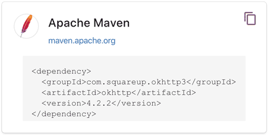
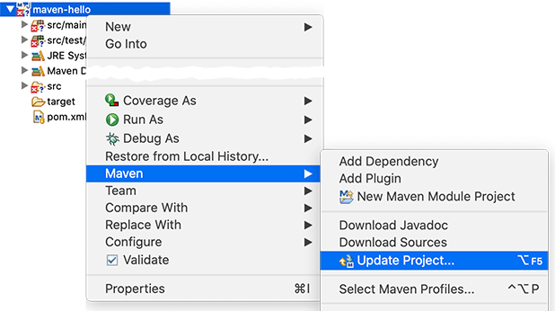

${user_name} @ ${created_at} ${delete_action}
${content}
${comment_replies}
${comment_action}
${comment_reply_form}
../git/BEFORE.md
如果我们的项目依赖第三方的jar包，例如commons logging，那么问题来了：commons logging发布的jar包在哪下载？
如果我们还希望依赖log4j，那么使用log4j需要哪些jar包？
类似的依赖还包括：JUnit，JavaMail，MySQL驱动等等，一个可行的方法是通过搜索引擎搜索到项目的官网，然后手动下载zip包，解压，放入classpath。但是，这个过程非常繁琐。
Maven解决了依赖管理问题。例如，我们的项目依赖abc这个jar包，而abc又依赖xyz这个jar包：
┌──────────────┐
│Sample Project│
└──────────────┘
│
▼
┌──────────────┐
│ abc │
└──────────────┘
│
▼
┌──────────────┐
│ xyz │
└──────────────┘
当我们声明了abc的依赖时，Maven自动把abc和xyz都加入了我们的项目依赖，不需要我们自己去研究abc是否需要依赖xyz。
因此，Maven的第一个作用就是解决依赖管理。我们声明了自己的项目需要abc，Maven会自动导入abc的jar包，再判断出abc需要xyz，又会自动导入xyz的jar包，这样，最终我们的项目会依赖abc和xyz两个jar包。
我们来看一个复杂依赖示例：
<dependency>
<groupId>org.springframework.boot</groupId>
<artifactId>spring-boot-starter-web</artifactId>
<version>1.4.2.RELEASE</version>
</dependency>
当我们声明一个spring-boot-starter-web依赖时，Maven会自动解析并判断最终需要大概二三十个其他依赖：
spring-boot-starter-web
spring-boot-starter
spring-boot
sprint-boot-autoconfigure
spring-boot-starter-logging
logback-classic
logback-core
slf4j-api
jcl-over-slf4j
slf4j-api
jul-to-slf4j
slf4j-api
log4j-over-slf4j
slf4j-api
spring-core
snakeyaml
spring-boot-starter-tomcat
tomcat-embed-core
tomcat-embed-el
tomcat-embed-websocket
tomcat-embed-core
jackson-databind
...
如果我们自己去手动管理这些依赖是非常费时费力的，而且出错的概率很大。
Maven定义了几种依赖关系，分别是compile、test、runtime和provided：
| scope | 说明 | 示例 |
|---|---|---|
| compile | 编译时需要用到该jar包（默认） | commons-logging |
| test | 编译Test时需要用到该jar包 | junit |
| runtime | 编译时不需要，但运行时需要用到 | mysql |
| provided | 编译时需要用到，但运行时由JDK或某个服务器提供 | servlet-api |
其中，默认的compile是最常用的，Maven会把这种类型的依赖直接放入classpath。
test依赖表示仅在测试时使用，正常运行时并不需要。最常用的test依赖就是JUnit：
<dependency>
<groupId>org.junit.jupiter</groupId>
<artifactId>junit-jupiter-api</artifactId>
<version>5.3.2</version>
<scope>test</scope>
</dependency>
runtime依赖表示编译时不需要，但运行时需要。最典型的runtime依赖是JDBC驱动，例如MySQL驱动：
<dependency>
<groupId>mysql</groupId>
<artifactId>mysql-connector-java</artifactId>
<version>5.1.48</version>
<scope>runtime</scope>
</dependency>
provided依赖表示编译时需要，但运行时不需要。最典型的provided依赖是Servlet API，编译的时候需要，但是运行时，Servlet服务器内置了相关的jar，所以运行期不需要：
<dependency>
<groupId>jakarta.servlet</groupId>
<artifactId>jakarta.servlet-api</artifactId>
<version>4.0.0</version>
<scope>provided</scope>
</dependency>
最后一个问题是，Maven如何知道从何处下载所需的依赖？也就是相关的jar包？答案是Maven维护了一个中央仓库（repo1.maven.org），所有第三方库将自身的jar以及相关信息上传至中央仓库，Maven就可以从中央仓库把所需依赖下载到本地。
Maven并不会每次都从中央仓库下载jar包。一个jar包一旦被下载过，就会被Maven自动缓存在本地目录（用户主目录的.m2目录），所以，除了第一次编译时因为下载需要时间会比较慢，后续过程因为有本地缓存，并不会重复下载相同的jar包。
对于某个依赖，Maven只需要3个变量即可唯一确定某个jar包：
通过上述3个变量，即可唯一确定某个jar包。Maven通过对jar包进行PGP签名确保任何一个jar包一经发布就无法修改。修改已发布jar包的唯一方法是发布一个新版本。
因此，某个jar包一旦被Maven下载过，即可永久地安全缓存在本地。
注：只有以-SNAPSHOT结尾的版本号会被Maven视为开发版本，开发版本每次都会重复下载，这种SNAPSHOT版本只能用于内部私有的Maven repo，公开发布的版本不允许出现SNAPSHOT。
提示
后续我们在表示Maven依赖时，使用简写形式groupId:artifactId:version，例如：org.slf4j:slf4j-api:2.0.4。
除了可以从Maven的中央仓库下载外，还可以从Maven的镜像仓库下载。如果访问Maven的中央仓库非常慢，我们可以选择一个速度较快的Maven的镜像仓库。Maven镜像仓库定期从中央仓库同步：
slow ┌───────────────────┐
┌─────────────▶│Maven Central Repo.│
│ └───────────────────┘
│ │
│ │sync
│ ▼
┌───────┐ fast ┌───────────────────┐
│ User │─────────▶│Maven Mirror Repo. │
└───────┘ └───────────────────┘
中国区用户可以使用阿里云提供的Maven镜像仓库。使用Maven镜像仓库需要一个配置，在用户主目录下进入.m2目录，创建一个settings.xml配置文件，内容如下：
<settings>
<mirrors>
<mirror>
<id>aliyun</id>
<name>aliyun</name>
<mirrorOf>central</mirrorOf>
<!-- 国内推荐阿里云的Maven镜像 -->
<url>https://maven.aliyun.com/repository/central</url>
</mirror>
</mirrors>
</settings>
配置镜像仓库后，Maven的下载速度就会非常快。
最后一个问题：如果我们要引用一个第三方组件，比如okhttp，如何确切地获得它的groupId、artifactId和version？方法是通过search.maven.org搜索关键字，找到对应的组件后，直接复制：

在命令中，进入到pom.xml所在目录，输入以下命令：
$ mvn clean package
如果一切顺利，即可在target目录下获得编译后自动打包的jar。
几乎所有的IDE都内置了对Maven的支持。在Eclipse中，可以直接创建或导入Maven项目。如果导入后的Maven项目有错误，可以尝试选择项目后点击右键，选择Maven - Update Project...更新：

使用Maven编译hello项目。
Maven通过解析依赖关系确定项目所需的jar包，常用的4种scope有：compile（默认），test，runtime和provided；
Maven从中央仓库下载所需的jar包并缓存在本地；
可以通过镜像仓库加速下载。